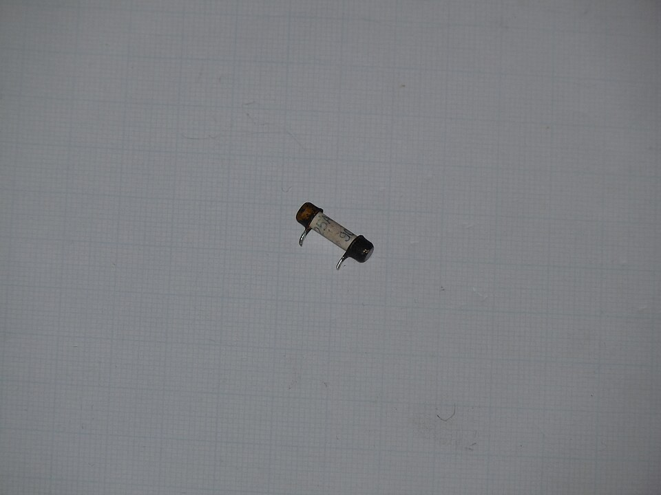
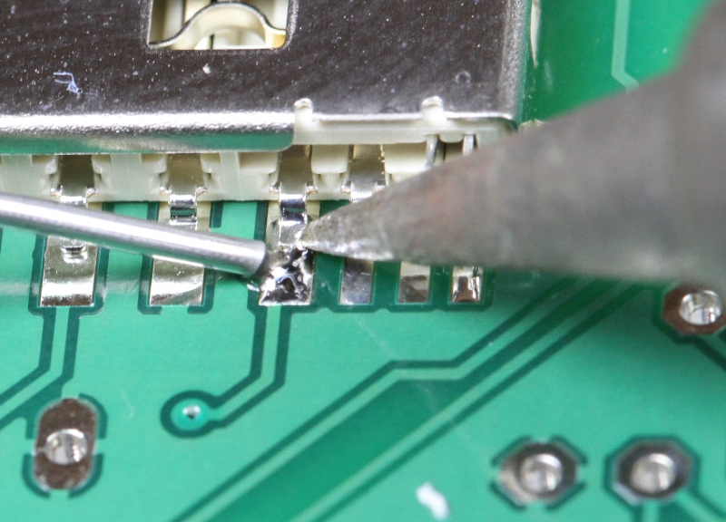

Prove and replace an open surface-mount board fuse
Distinguish a missing source, an open fuse and a downstream fault. Practise replacing a documented 1206 fuse on a 5 V board.
A fuse has two test points and a reason for opening
An input fuse is in series with the power path. A missing supply, open link, broken pad and excessive load can all leave the circuit beyond it unpowered. Before pricing a real laptop job, confirm the schematic and board revision and mark the named fuse and both ends. A similarly shaped ferrite bead, zero-ohm link or resettable device can serve a different function. Use P97 to prove a shorted branch and P26 to practise chip rework.

Photo by Dmitry G, scaled with labels. Original photograph · CC BY-SA 3.0.


Photo by Bill Earl, with labels. Adafruit source · CC BY-SA 3.0.
Watch the hot-tweezer technique. Follow how both solder joints release before lifting. Use a suitable tip, magnification and the component maker's solder and handling instructions on your practice board. PACE's surface-mount component removal demonstration.
Build a protected five-volt practice board
Use a 1206 breakout or two-pad training PCB for F1, two identical documented 1206 fuses with a current rating above the trainer supply limit, a 100 Ω load resistor rated at least 0.5 W, clip leads and an isolated 5 V supply capped at 75 mA. An example part family is the Littelfuse 466 Series. Record the exact variant you fit. The power supply's current limit protects the exercise. The fuse is fitted to practise identification, measurement and replacement. Do not intentionally blow it.
With power disconnected, lay out
5V → TP1 → F1 → TP2 → 100 Ω → return. Label the input and output posts. Verify that the empty training footprint separates the points, and that TP2 to return is about 100 Ω. Make the first missing-fuse test with no part fitted. This reproduces the electrical effect of an open fuse without damaging one.Power only this isolated trainer. Measure TP1 and TP2 against return, then directly across TP1–TP2. Expect about 5 V at TP1, near 0 V at TP2 and about 5 V across the gap. Remove both supply leads before resistance tests or soldering. Verify a spare fuse with a meter on the bench and record the shorted-lead reading for comparison.
Fit the correct fuse to both pads. Check the joint at each end and any nearby pads for bridges. Measure across the newly fitted fuse and verify the output to return still looks like the 100 Ω load. Power up on the trainer's 75 mA cap. Expect TP2 near 5 V and a load current near 50 mA. Measure the small difference between TP1 and TP2 directly if the meter can resolve it.
Disconnect again. Practise removing the first fuse with both ends released and installing the identical spare. Inspect pad condition, repeat the cold measurements, then the powered baseline. Retest the same connections and record the readings. A detached training board with sound pads gives you a safe way to learn the soldering step before touching a laptop.
| Expected trainer condition | TP1 to return | TP2 to return | Next check |
|---|---|---|---|
| Source missing, load and fuse fitted | Near zero | Near zero | Check the source and upstream connection. |
| Open F1 with good supply and the 100 Ω load in place | About 5 V | Near zero | Verify the open cold and check the load before replacing the part. |
| Good fuse and good load | About 5 V | About 5 V | Record load current and verify repeatability. |
Apply the decision to a donor motherboard
Use the correct service isolation, including its battery supplies, before cold measurements. Confirm that the suspect component is the documented protection device. If its in-circuit reading is ambiguous, a parallel path can mask an open. Use the board documentation and an approved isolation approach before condemning it. Check whether the downstream load looks abnormal compared with the exact reference. Never bridge an open fuse or increase its rating to see what happens.
Use the specified part or an approved equivalent for the actual circuit. Compare DC voltage, current, time-current response, inrush withstand, interrupt capability, footprint and temperature limits. Cold continuity and a same-size body cannot verify those ratings. A repeated open or recurring power fault needs diagnosis of the protected circuit before another replacement. Littelfuse 466 actual data sheet · Littelfuse on fuse selection.
Record the labelled points, why you called the device open, evidence from the protected load, exact replacement number and the test after rework. If the original cause is unresolved, show what remains uncertain.